Portifólio de Matemática
Portifólio de Matemática
.png)
Instituto Federal do Rio Grande do Sul - Campus Erechim
Voltar
Sistemas de Numeração
Sistema Decimal
O sistema decimal é o sistema numérico mais comum e é baseado em dez símbolos numéricos: 0, 1, 2, 3, 4, 5, 6,
7, 8 e 9. Cada posição no número representa uma potência de dez. Por exemplo, o número 543 é composto por 5
unidades de centenas (10^2), 4 unidades de dezenas (10^1) e 3 unidades de unidades (10^0).
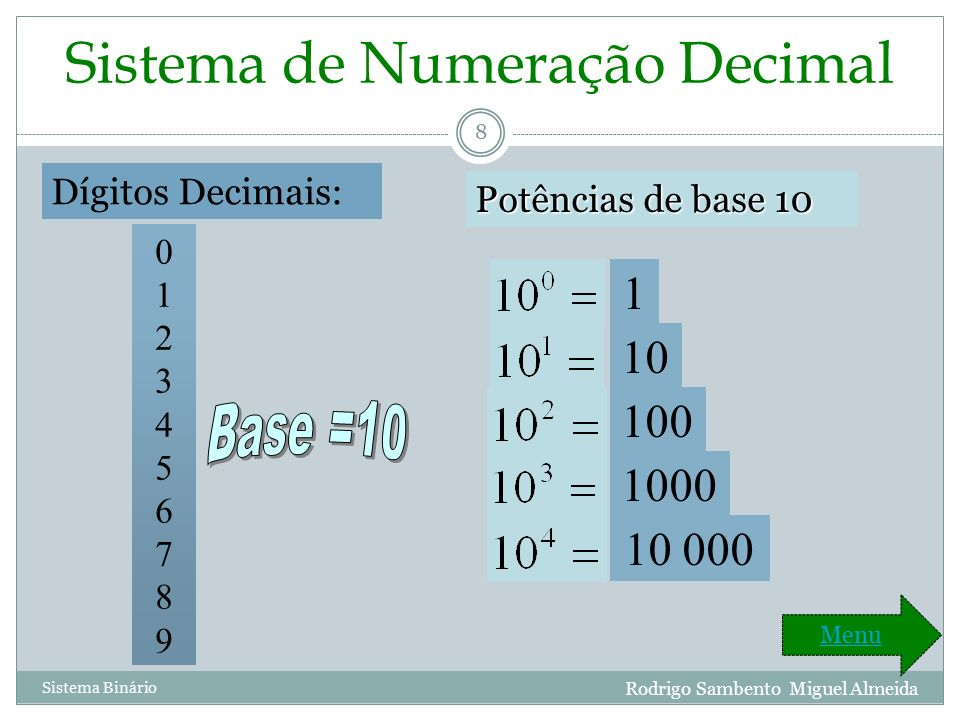
Referência
Sistema Binário
O sistema binário é usado principalmente em sistemas de computação e é baseado em dois símbolos
numéricos: 0 e 1. Cada posição no número representa uma potência de dois. Por exemplo, o número binário
1011 representa (1 x 2^3) + (0 x 2^2) + (1 x 2^1) + (1 x 2^0), que é igual a 11 em decimal.
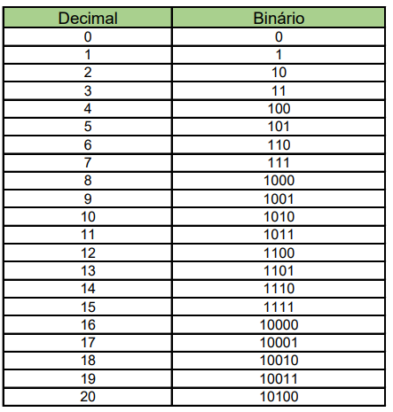
Referência
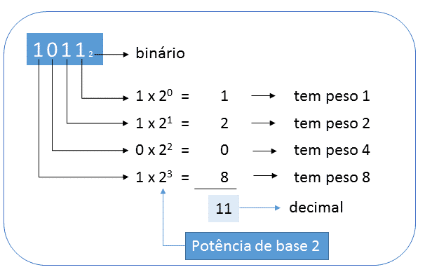
Referência
Sistema Octal
O sistema octal é baseado em oito símbolos numéricos: 0, 1, 2, 3, 4, 5, 6 e 7. Cada posição no número
representa uma potência de oito. O sistema octal é usado principalmente em sistemas de computação antigos.
Por exemplo, o número octal 27 representa (2 x 8^1) + (7 x 8^0), que é igual a 23 em decimal.
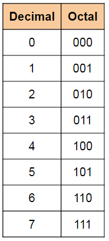
Referência
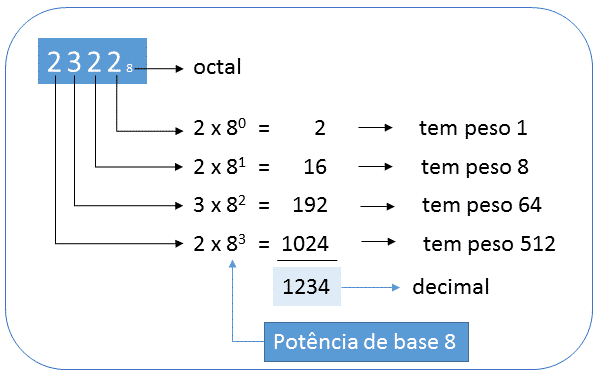
Referência
Sistema Hexadecimal
O sistema hexadecimal é baseado em 16 símbolos numéricos: 0, 1, 2, 3, 4, 5, 6, 7, 8, 9, A, B, C, D, E e F.
Cada posição no número representa uma potência de 16. O sistema hexadecimal é usado principalmente em
programação de computadores e é mais compacto do que o sistema binário. Por exemplo, o número hexadecimal 2F
representa (2 x 16^1) + (15 x 16^0), que é igual a 47 em decimal.
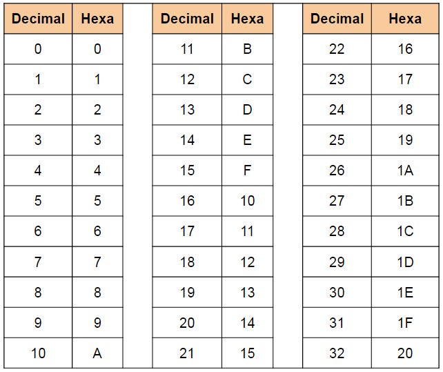
Referência
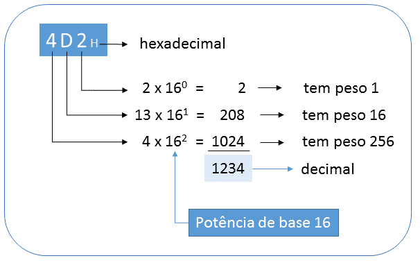
Referência
Regras de Conversão
Existem diversas regras de conversão entre sistemas de numeração, dependendo da base numérica envolvida e do
tipo de número que se deseja converter. A seguir, listamos algumas das regras mais comuns:
Conversão de decimal para binário:
- Dividir o número decimal por 2 e anotar o resto da divisão (0 ou 1);
- Continuar dividindo o resultado da divisão anterior por 2 até que o quociente seja 0;
- Escrever os restos da divisão de trás para frente, formando o número binário equivalente.
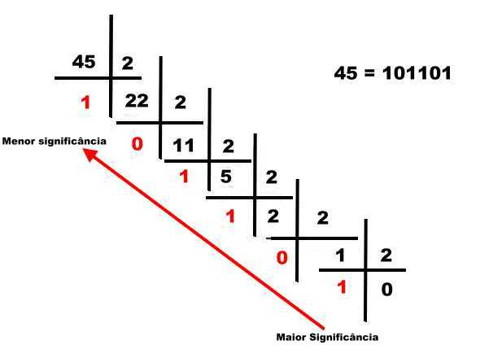
Referência
Conversão de binário para decimal:
- Escrever o número binário com os dígitos alinhados da direita para a esquerda, começando pelo dígito
menos significativo;
- Multiplicar cada dígito por 2 elevado à potência correspondente à posição do dígito (começando por 2^0 =
1 para o dígito menos significativo);
- Somar os resultados das multiplicações para obter o número decimal equivalente.
 Referência
Referência
Conversão de decimal para octal:
- Dividir o número decimal por 8 e anotar o resto da divisão (entre 0 e 7);
- Continuar dividindo o resultado da divisão anterior por 8 até que o quociente seja 0;
- Escrever os restos da divisão de trás para frente, formando o número octal equivalente.
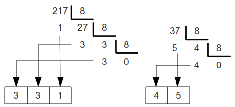
Referência
Conversão de octal para decimal:
- Escrever o número octal com os dígitos alinhados da direita para a esquerda, começando pelo dígito menos
significativo;
- Multiplicar cada dígito por 8 elevado à potência correspondente à posição do dígito (começando por 8^0 =
1 para o dígito menos significativo);
- Somar os resultados das multiplicações para obter o número decimal equivalente.
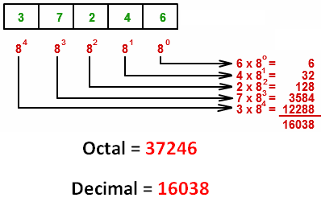
Referência
Conversão de decimal para hexadecimal:
- Dividir o número decimal por 16 e anotar o resto da divisão (entre 0 e 15, sendo que os valores de 10 a
15 são representados pelas letras A a F);
- Continuar dividindo o resultado da divisão anterior por 16 até que o quociente seja 0;
- Escrever os restos da divisão de trás para frente, formando o número hexadecimal equivalente.
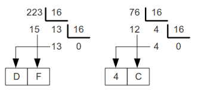
Referência
Conversão de hexadecimal para decimal:
- Escrever o número hexadecimal com os dígitos alinhados da direita para a esquerda, começando pelo dígito
menos significativo;
- Multiplicar cada dígito por 16 elevado à potência correspondente à posição do dígito (começando por 16^0
= 1 para o dígito menos significativo);
- Somar os resultados das multiplicações para obter o número decimal equivalente.
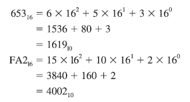
Referência
É importante lembrar que existem outras bases numéricas, como a base 3, 4, 5, etc., e que as regras de
conversão podem variar para essas bases. Além disso, em alguns casos é possível fazer a conversão direta
entre sistemas de numeração sem precisar passar pelo sistema decimal, mas essa abordagem depende do
conhecimento prévio dos valores associados a cada dígito na base de origem e de destino.
Voltar
© Copyright, Lucas Santos